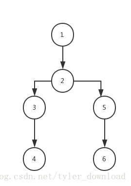

更详细的讲解和代码调试演示过程，请参看视频
用java开发C语言编译器
在C语言中，有一个非常基础，也是极其重要的函数，就是sizeof, 这个函数的作用是计算变量所占内存的大小。只有知道了对应变量的大小，那么我们才能动态分配对应大小的内存。
如果sizeof 计算的对象，仅仅是简单的基础类型变量，例如 int， char 等，那么他们的大小很容易计算，由于我们当前代码假设运行在32位机器上，因此如果传入sizeof的变量是int , 或是 指针类型，那么该变量的内存大小就是4字节，如果变量的类型是short, 那么它的内存大小就是2字节，如果是char, 那么内存大小就是1字节。
因此实现sizeof的时候，我们通过传入的变量名，找到它对应的Symbol对象，通过Symbol对象找到它的数据类型，根据上面的分类就可以得知该对象的内存大小了。
问题在于，sizeof传入的可能是符合数据类型，也就是说，传入的变量可以是结构体，例如下面的结构体：
struct TAG {
int p;
char c;
int arr[3];
};
结构体的内存大小，实际上是组成该结构体的的内部成员大小之和，因此计算结构体TAG的内存大小，就得计算p, c, 和arr[3]这三个成员的大小后求和。
一种更难的情况是结构体间套，也就是一个结构体里面还包含结构体成员，这么看来，sizeof要正确实现，必须是一种层级递归的方式。
我们采用深度优先的搜索来实现sizeof, 深度优先搜索主要是用于图的遍历，这里我们把该算法平移到sizeof的计算上来，深度优先搜索的基本原理如下，假定一个有向图：

在遍历上面的有向图时，如果被访问的节点含有子节点，那么先访问其子节点，然后在访问该节点或该节点的兄弟。那么上面的有向图，深度优先遍历的次序可以如下：1->2->3->4->3->2->5->6->5->1
同理，在实现sizeof函数时，如果传进来的变量是结构体，那么我们先通过sizeof计算结构体每个成员的大小，然后再把每个成员的大小加总，得到当前结构体的大小。
由此sizeof函数实现的基本逻辑是：
1， 如果传入的变量是基本数据类型，那么直接返回该变量的字节大小。
2， 如果传入的变量是结构体，那么再次调用sizeof计算每个成员的大小，然后加总得到当前结构体的大小。
3， 如果当前变量是数组类型，那么把前两步计算的大小乘以数组的元素个数，得到的就是当前变量的大小。
由于sizeof是库函数，因此它的实现在ClibCall.java 中，实现代码如下：
public class ClibCall {
private Set<String> apiSet;
private ClibCall() {
apiSet = new HashSet<String>();
apiSet.add("printf");
apiSet.add("malloc");
apiSet.add("sizeof");
}
....
public Object invokeAPI(String funcName) {
switch (funcName) {
case "printf":
return handlePrintfCall();
case "malloc":
return handleMallocCall();
case "sizeof":
return handleSizeOfCall();
default:
return null;
}
}
private Integer calculateVarSize(Symbol symbol) {
int size = 0;
if (symbol.getArgList() == null) {
size = symbol.getByteSize();
} else {
Symbol head = symbol.getArgList();
while (head != null) {
size += calculateVarSize(head);
head = head.getNextSymbol();
}
}
Declarator declarator = symbol.getDeclarator(Declarator.ARRAY);
if ( declarator != null) {
size = size * declarator.getElementNum();
}
return size;
}calculateVarSize就是解释器对sizeof函数的解释执行，传入参数是sizeof变量对应的Symbol对象，如果getArgsList 返回为空，那表明当前变量不是结构体类型，于是直接通过调用Symbol的getByteSize 函数获取基础数据类型的字节大小。
如果getArgsList返回不是空，那么当前变量类型是结构体，于是把结构体中的每个成员取得，然后递归的调用calculateVarSize去计算每个成员的内存大小。
最后判断下，当前变量是否是数组，如果是数组的话，那么就要把单个变量的大小乘以数组中元素个数，才能得到总的内存大小。
以上代码就是实现sizeof的主逻辑。解释器还有一些地方，代码需要变动，函数调用需要获得传入参数，以前我们的做法是，先获得传入参数的值，然后把这些值存到FunctionArgumentList这个类中，以便解释器执行库函数时容易取得传入参数的值。
sizeof函数需要的不再是变量的值，而是变量对应的Symbol对象，因此我们在解析传入参数时，需要得到参数对应的Symbol对象，由于解析传入参数是在类
ArgsExecutor中实现的，因此需要在该类中，增加获取输入参数Symbol对象的代码：
package backend;
import java.util.ArrayList;
import frontend.CGrammarInitializer;
public class ArgsExecutor extends BaseExecutor {
@Override
public Object Execute(ICodeNode root) {
int production = (Integer)root.getAttribute(ICodeKey.PRODUCTION);
ArrayList<Object> argList = new ArrayList<Object>();
ArrayList<Object> symList = new ArrayList<Object>();
ICodeNode child ;
switch (production) {
case CGrammarInitializer.NoCommaExpr_TO_Args:
child = (ICodeNode)executeChild(root, 0);
Object objVal = child.getAttribute(ICodeKey.VALUE);
argList.add(objVal);
objVal = child.getAttribute(ICodeKey.SYMBOL);
symList.add(objVal);
break;
case CGrammarInitializer.NoCommaExpr_Comma_Args_TO_Args:
child = executeChild(root, 0);
objVal = child.getAttribute(ICodeKey.VALUE);
argList.add(objVal);
objVal = child.getAttribute(ICodeKey.SYMBOL);
symList.add(objVal);
child = (ICodeNode)executeChild(root, 1);
ArrayList<Object> list = (ArrayList<Object>)child.getAttribute(ICodeKey.VALUE);
argList.addAll(list);
list = (ArrayList<Object>)child.getAttribute(ICodeKey.SYMBOL);
symList.add(list);
break;
}
root.setAttribute(ICodeKey.VALUE, argList);
root.setAttribute(ICodeKey.SYMBOL, symList);
return root;
}
}
最后，FunctionArgumentList这个类也要做一些改动，原来这个类只提供接口存储参数的值，这次要增加接口，存储参数的Symbol对象，改动如下：
package backend;
import java.util.ArrayList;
import java.util.Collections;
public class FunctionArgumentList {
private static FunctionArgumentList argumentList = null;
private ArrayList<Object> funcArgList = new ArrayList<Object>();
private ArrayList<Object> argSymList = new ArrayList<Object>();
public static FunctionArgumentList getFunctionArgumentList() {
if (argumentList == null) {
argumentList = new FunctionArgumentList();
}
return argumentList;
}
public void setFuncArgList(ArrayList<Object> list) {
funcArgList = list;
}
public void setFuncArgSymbolList(ArrayList<Object> list) {
this.argSymList = list;
}
public ArrayList<Object> getFuncArgList(boolean reverse) {
if (reverse == true) {
Collections.reverse(funcArgList);
}
return funcArgList;
}
public ArrayList<Object> getFuncArgSymsList(boolean reverse) {
if (reverse == true) {
Collections.reverse(argSymList);
}
return argSymList;
}
private FunctionArgumentList() {}
}有了以上的代码实现后，我们的解释器就可以解释执行如下C语言代码了：
void main() {
struct TAG {
int p;
char c;
int arr[3];
};
struct TAG myTag[3];
int size ;
size = sizeof(myTag);
printf("The size of struct TAG is : %d", size);
}
上面的代码中，定义了一个结构体叫TAG, 结构体里有三个成员，其中一个是数组，一个结构体变量的内存大小是：4 + 1 + 4*3 = 17. 由于代码中又定义了一个含有三个成员的结构体数组myTag，因此myTag的总大小是51 = 17*3.
我们的解释器解释执行上面代码后得到的结果为：
The size of struct TAG is : 51
也就是我们的解释器确实能够正确的执行sizeof函数。
更详细的代码讲解和调试演示，请参看视频。
更多技术信息，包括操作系统，编译器，面试算法，机器学习，人工智能，请关照我的公众号：